Paper Deadline
Abstract Deadline
Contest Deadline
News
22 October 2011
- BioVis 2011 Best Paper Award goes to RuleBender: Integrated Visualization for Biochemical Rule-Based Modeling. Honorable mentions go to HiTSEE: A Visualization Tool for Hit Selection and Analysis in High-Throughput Screening Experiments and Semantically Steered Visual Analysis of Highly Detailed Morphometric Shape Spaces. Congratulations to the authors!
- We have posted the final schedule for the meeting with descriptions of all sessions as well as PDFs of all accepted abstracts.
4 October 2011
- We are happy to welcome Nature Methods as a BioVis 2011 Publisher Supporter!
BioVis 2011 Papers and Abstracts

 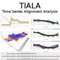
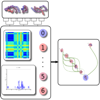
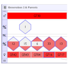
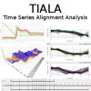
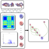
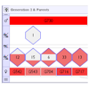


 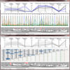
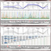


 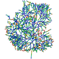
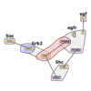
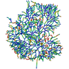
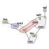


 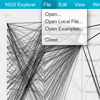
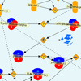
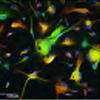
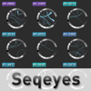
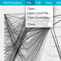
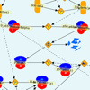
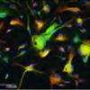
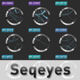


 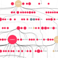
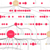

 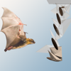
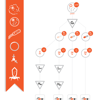
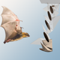
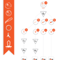
 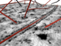
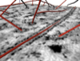

 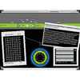
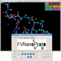
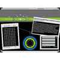
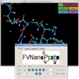


About
The rapidly expanding application of experimental high-throughput and high-resolution methods in biology is creating enormous challenges for the visualization of biological data. To address these challenges, researchers in the visualization and bioinformatics communities need to engage in the design, implementation, application, and evaluation of novel visualization techniques and tools that provide insight into large and highly complex data sets.
BioVis 2011 -
The symposium will serve as a platform for researchers from these fields to increase the impact of data visualization approaches in biology. The breadth and diversity of biological research topic areas will enable researchers from all parts of the visualization and bioinformatics communities to contribute to this effort and the symposium will provide an excellent opportunity to initiate interdisciplinary collaborations.
BioVis 2011 will be taking place on 23-24 October 2011 in Providence, RI and will be co-located with IEEE VisWeek 2011. IEEE VisWeek is the premier forum for visualization advances for academia, government, and industry, bringing together researchers and practitioners with a shared interest in tools, techniques, technology, and theory.